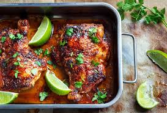
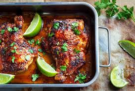

NTUC Hala Roasted Chicken
NTUC chicken is a precooked type of chicken sold in FairPrice supermarket in various locations. FYI you can imagine FairPrice to be the Singaporean version of Vinmart.
- it's cheap: with around $5 you have a big ass chicken
- it's fast: took me only 5 mins to pick a well cooked chicken yey me
- it's protein rich: having to train 5 hours almost everyday I'm too lazy and don't have time nor energy to properly plan my diet. But my coach recommended this NTUC chicken as he said it will provides me with enough energy to grind through my training session and stay full until evening. He's not wrong
Ingredients
- Chicken
- Olive oil
- Honey or pepper
- Salt
Direction
Step 1: Prepare the chicken
Marinate the whole chicken with some oil to make sure the meat has enough time to get tendered. Wait for around 5 minutes for the the chieken to get soaked up
Step 2: Season the chicken
Put some honey and salt over the body of the chicken. Apply based on your personal preference
Step 3: Heat it up
Put inside the oven. with waiting time around 20 minutes
Other dishes
 
